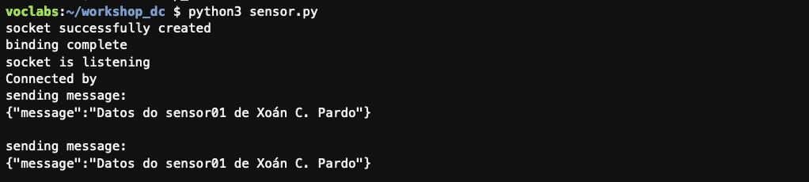
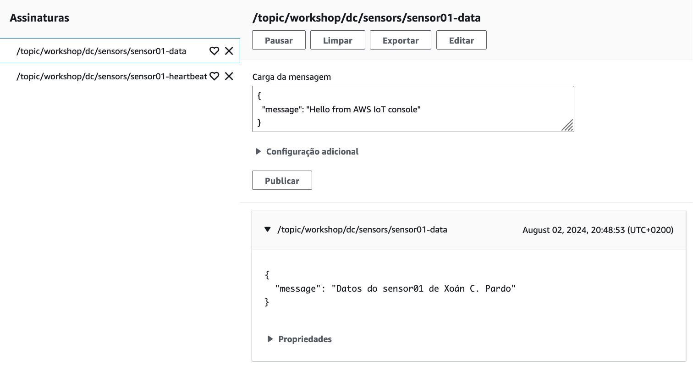
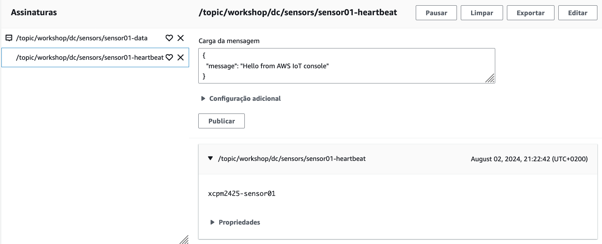

Actividade 4
ENVÍO DE DATOS DE TELEMETRÍA DE SENSORES MEDIANTE MQTT.
Obxectivo
O obxectivo desta actividade é comprobar o funcionamento da funcionalidade Publicación de telemetrías de sensores do AWS IoT Device Client, que permite envíar os datos de telemetría dos sensores conectados no dispositivo IoT ao AWS IoT Core mediante MQTT.
Nota
Podes ver aquí a documentación da funcionalidade Publicación de telemetrías de sensores.
Configuración da publicación de telemetrías de sensores
- Edita o ficheiro de configuración do Device Client para activar a publicación de telemetrías de sensores.
Nomenclatura
Usa o teu prefixo no nome do sensor.
$ sudo nano /etc/.aws-iot-device-client/aws-iot-device-client.conf
$ sudo tail -13 /etc/.aws-iot-device-client/aws-iot-device-client.conf
},
"sensor-publish": {
"sensors": [
{
"name": "xcpm2425-sensor01",
"addr": "/tmp/sensors/sensor01-server",
"eom_delimiter": "[\r\n]+",
"mqtt_topic": "/topic/workshop/dc/sensors/sensor01-data",
"mqtt_heartbeat_topic": "/topic/workshop/dc/sensors/sensor01-heartbeat"
}
]
}
}
- Crea o ficheiro para o socket de dominio UNIX.
$ mkdir /tmp/sensors
$ touch /tmp/sensors/sensor01-server
$ chmod 660 /tmp/sensors/sensor01-server
- Reinicia o servizo e comproba que non houbera ningún erro.
$ sudo systemctl restart aws-iot-device-client
$ sudo systemctl status aws-iot-device-client
- Compróbao tamén no ficheiro de log.
$ sudo grep "Sensor.cpp" /var/log/aws-iot-device-client/aws-iot-device-client.log
2024-08-02T18:27:42.535Z [DEBUG] {Sensor.cpp}: Starting sensor name: xcpm2425-sensor01
2024-08-02T18:27:42.535Z [ERROR] {Sensor.cpp}: Error sensor name: xcpm2425-sensor01 func: aws_socket_connect msg: socket connection refused.
De momento indica que se creou o sensor porén non puido aínda conectarse ao socket.
-
No cliente MQTT da consola de AWS IoT subscríbete aos tópicos configurados para publicar a telemetría e o heartbeat do sensor:
/topic/workshop/dc/sensors/sensor01-data/topic/workshop/dc/sensors/sensor01-heartbeat
Nota
Cando te subscribas ao tópico do heartbeat escolle a opción Mostrar a carga útil como strings na Configuración adicional.
- Crea un programa Python que simule o funcionamento dun sensor que agarda por unha conexión ao socket para enviar os seus datos de telemetría.
Nomenclatura
Usa o teu nome no payload da mensaxe.
$ pwd
/home/ubuntu/workshop_dc
$ nano sensor.py
$ cat sensor.py
# imports
import socket
import os
import time
# MQTT message payload
message = '{\"message\":\"Datos do sensor01 de <Pon aquí o teu nome>\"}\r\n'
# set socket location
server_address = '/tmp/sensors/sensor01-server'
# check for previous socket and clean up
try:
os.unlink(server_address)
except OSError:
if os.path.exists(server_address):
print ("socket already exists")
# create socket
with socket.socket(socket.AF_UNIX, socket.SOCK_STREAM) as s:
print ("socket successfully created")
# Avoid bind() exception: OSError: [Errno 48] Address already in use
s.setsockopt(socket.SOL_SOCKET, socket.SO_REUSEADDR, 1)
# bind to the socket
s.bind(server_address)
print ("binding complete")
# start listening mode
s.listen(5)
print ("socket is listening")
# accept connection
conn, addr = s.accept()
with conn:
print(f"Connected by {addr}")
while True:
print('sending message:')
print(message)
conn.sendall(message.encode('utf-8'))
time.sleep(5)
Nota
Este simulador é moi simple e acepta todas as conexións sen realizar ningunha autenticación do cliente.
- Executa o simulador do sensor.
$ python3 sensor.py
No terminal aparecerá unha mensaxe por cada ocasión na que o Device Client se conecta ao socket, por defecto cada 10 segundos.
 Imaxe: execución do simulador de sensor.
- Comproba no cliente MQTT que as mensaxes se reciben no tópico
/topic/workshop/dc/sensors/sensor01-data.
 Imaxe: mensaxe publicada no cliente MQTT.
Nota
Se agardas o tempo suficiente (por defecto 300 segundos) verás que se reciben tamén as mensaxes de heartbeat do sensor no outro tópico. O payload destas mensaxes contén unicamente o nome do sensor.
 Imaxe: mensaxe de heartbeat publicada no cliente MQTT.
- Comproba tamén o ficheiro de log.
$sudo tail -F /var/log/aws-iot-device-client/aws-iot-device-client.log
2024-08-02T18:48:23.378Z [DEBUG] {Sensor.cpp}: Nothing to publish sensor name: xcpm2425-sensor01
2024-08-02T18:48:23.378Z [DEBUG] {Sensor.cpp}: Read sensor name: xcpm2425-sensor01 bytes: 51
2024-08-02T18:48:23.378Z [DEBUG] {Sensor.cpp}: Publish sensor name: xcpm2425-sensor01 bytes: 51
2024-08-02T18:48:23.385Z [DEBUG] {Sensor.cpp}: Publish complete sensor name: xcpm2425-sensor01 packetId: 19
2024-08-02T18:48:28.383Z [DEBUG] {Sensor.cpp}: Read sensor name: xcpm2425-sensor01 bytes: 51
2024-08-02T18:48:28.383Z [DEBUG] {Sensor.cpp}: Publish sensor name: xcpm2425-sensor01 bytes: 51
2024-08-02T18:48:28.389Z [DEBUG] {Sensor.cpp}: Publish complete sensor name: xcpm2425-sensor01 packetId: 20
- Detén o simulador premendo
Ctrl+C.
Xustificación da actividade
Toma as seguintes capturas para a memoria de xustificación da práctica:
- Ambiente Cloud9 no que se vexa a saída do terminal no que se executou sensor.py e a execución do comando seguinte:
$ sudo cat /etc/.aws-iot-device-client/aws-iot-device-client.conf | jq '."sensor-publish"'
- Consola IoT coas mensaxes MQTT recibidas no tópico
/topic/workshop/dc/sensors/sensor01-datanas que poida verse o payload.
Importante
As capturas teñen que asemellarse ás que se tomaron no curso e nas prácticas anteriores. As capturas tomadas na consola AWS teñen que incluír o menú superior no que poida verse o nome de usuario da conta.